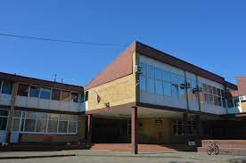
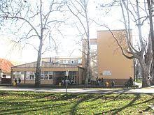
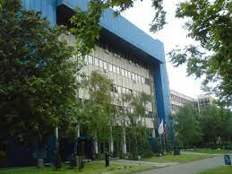
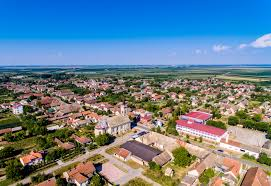
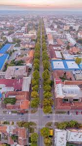
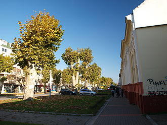

Ime i prezime:Tamara Nenadić
Odeljenje:IV2
Adresa:Žarka Zrenjanina 23,Bačka Palanka
Telefon:066149895
osnovno:OŠ"Vuk Karadžić
srednje:Gimnazija "20. oktobar"
šta planiram buduće:PMF
   Bačka Palanka je gradsko naselje u Srbiji u opštini Bačka Palanka u Južnobačkom okrugu.Prema popisu iz 2011. bilo je 28239 stanovika. На основу археолошких налаза и писаних докумената доказано је да су на овим просторима људи живели непрекидно од праисторије до данас. Прва насеља се подижу у XI веку, а назив Паланка се помиње 1593. године. Од XI века на овим просторима живели су Угари и Срби (што потврђују словенски српски топоними: Велики и Мали Гајиц, Голубњак, Рајково, Ристићев пут, Урошка бара итд). Подаци су узети из мађарских извора, који истражују борбе Арпадоваца или Арпадовића у XI веку, те се могу сматрати поузданим. Крајем XVI века ове просторе заузимају Турци, а Карловачким миром 1699. године их дефинитивно напуштају. После тога овде се насељава ново српско становништво, те немачко, словачко и мађарско. До 1916. године овде постоје три насеља: Стара, Нова и Немачка Паланка.
Površina:579 km2
 Бачкопаланачка општина захвата пространу површину југозападне Бачке са дванаест насеља. Поред тога, њој припадају и два мања насеља у Срему, што значи да Дунав, који чини границу између Бачке и Срема пресеца општинску територију. Бачка Паланка се на обали реке Дунав на самој граници са Хрватском. Поред леве, бачке обале Дунава, на подручју општине, простире се 0,5-2 km широка ниска ритска површина, угрожена високим водама Дунава. Због тога на самој обали нема изграђених насеља. Најближа Дунаву је Бачка Паланка. Периферни јужни делови града удаљени су од реке 500 m. Једино мало сремско насеље Нештин лежи непосредно уз десну дунавску обалу. Из наведених разлога, на подручју општине није изграђено ни једно речно пристаниште, тако да Дунав, иако велика међународна пловна река, у саобраћајном погледу за општину нема већег значаја. Општинском територијом трасирана су и два пловна канала хидросистема Дунав–Тиса–Дунав. Читавом ширином општинско подручје пресеца канал Бачки Петровац–Каравуково, правцем исток–запад, а мањи североисточни део код Деспотова пресеца канал Нови Сад–Савино Село правцем север–југ. Поменимо још да поред Младенова, уз југозаадно ивично подручје општине тече каналисана бачка речица Мостонга.
 Неупоредиво већег значаја за општину Бачка Паланка су копнене саобраћајнице. Највећег значаја су два аутомобилска путна правца. Први, који води од Новог Сада преко Бачке Паланке према Бачу и Сомбору, одакле се наставља преко Бездана за Барању и на север ка Мађарској, Код Оџака се од овог правца одваја значајан пут ка Богојеву и Осијеку. Други пресеца општину правцем север–југ. Он повезује Бачку Паланку преко Врбаса, Бачке Тополе и Суботице са средњом и северном Бачком. Исти пут се на југ наставља преко моста на Дунаву ка Илоку, Шиду и ауто-путу Београд–Загреб. Код Илока овај путни правац пресеца значајан Подунавски пут који води од Петроварадина преко Беочина и Илока према Вуковару и даље ка Осијеку у једном правцу и од Вуковара према Винковцима у другом.
Pesma Desanke Maksimović
Sve o pesnikinji
Priznanja Desanke Maksimović